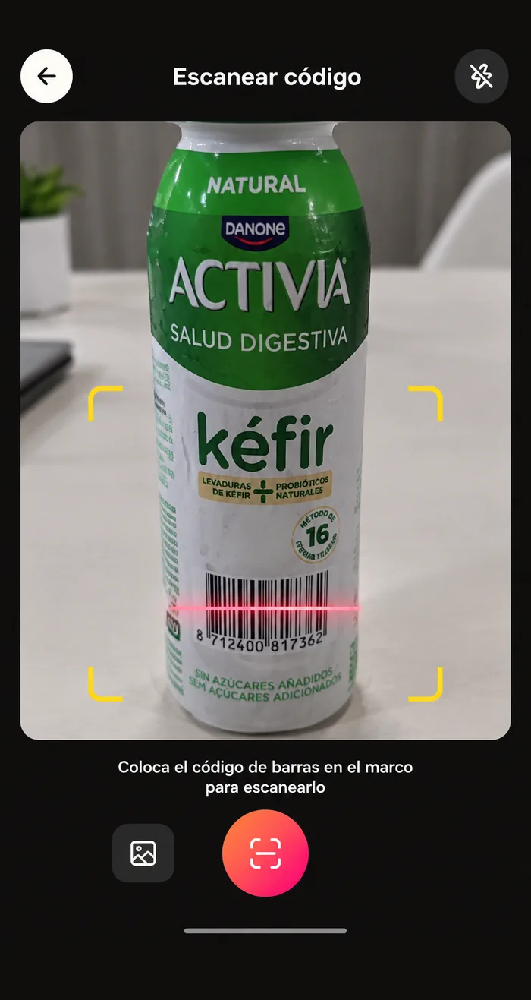
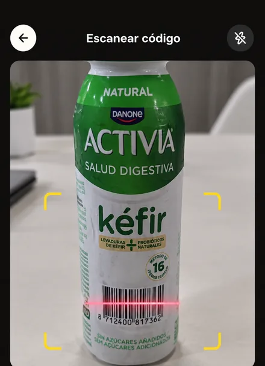
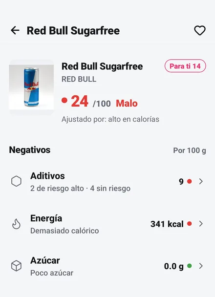
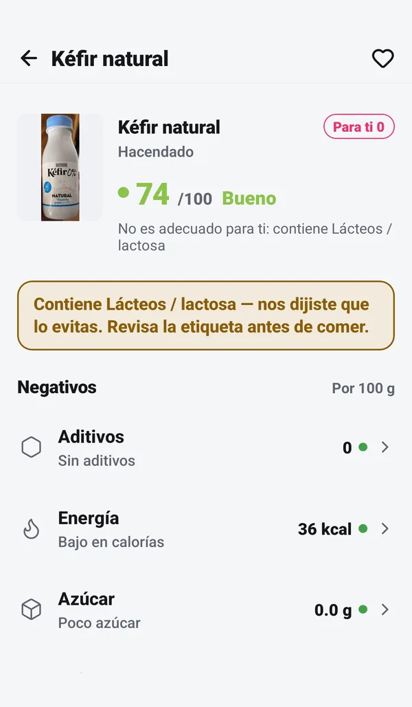
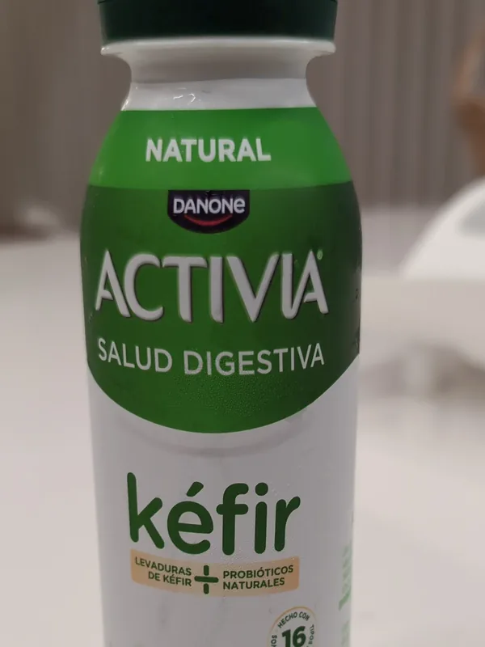

Los productos envasados, ya resueltos.
Apunta con la cámara al código de barras de cualquier paquete y la nutrición vuelve al instante: calorías, macros, la lista de ingredientes y los alérgenos, leídos de una gran base de datos de productos en lugar de estimados. Es gratis, es ilimitado y nunca toca tu cuota de escaneos con IA.

Cuatro segundos, casi todos sujetando el paquete.
Todo lo que lleva código de barras es el caso fácil. Aquí no se estima nada: los números salen de la ficha del producto.
-
Apunta al código
En cualquier parte del paquete y en cualquier ángulo en que puedas sujetarlo. Lo lee en cuanto el código entra en cuadro.

-
Aparece el producto
Nombre, marca y la ficha nutricional completa, sacada de la base de datos y no deducida de una foto.

-
Indica la cantidad
Por 100 g, por la ración impresa en la etiqueta o por lo que realmente vas a tomar. Medio paquete es medio paquete.
-
Regístralo en una comida
Directo a Desayuno, Comida, Cena o Snack, donde se suma a todo lo demás del día.
Los números de la etiqueta, sin leer la etiqueta.
Todo lo que hay en la parte de atrás del paquete, en un formato que sí puedes comparar y registrar.
-
Identificación instantánea
El producto reconocido por su código: sin buscar, sin entradas parecidas pero no iguales y sin elegir entre ocho versiones del mismo yogur.
-
Calorías
La cifra principal, para la cantidad que tú indiques y no solo por 100 g.
-
Desglose completo de macros
Proteínas, carbohidratos y grasas, directos a los anillos del día.
-
La lista de ingredientes
Lo que lleva de verdad y en el orden en que lo lleva, que a menudo dice más que el recuento de calorías.
-
Alérgenos
Señalados desde la ficha del producto, para que no tengas que leer letra pequeña en mitad de un pasillo.
-
Gratis e ilimitado
El escaneo de códigos no se mide ni consume un escaneo con IA. Escanea la compra entera si quieres: no cuesta nada.

Un número, y los motivos que lo explican.
Cada producto escaneado vuelve con una puntuación sobre 100 y, debajo, lo que la produce: los negativos por un lado, los positivos por otro, y cada fila se abre para ver el detalle. Sube tanto como baja: no es un veredicto sobre ti, es la parte de atrás del paquete leída en voz alta.
- Aditivos, energía, azúcar y sal, cada uno con su número detrás
- Lo que le dijiste a Fotocal que evitas aparece avisado en el propio resultado
- Cada cifra se muestra por 100 g, así dos productos se comparan de verdad
- Nada llega a tu diario hasta que indicas la cantidad y tocas añadir

Dos paquetes, un pasillo, cuatro segundos
La parte de delante del paquete es marketing. La de atrás es letra pequeña que no ibas a leer de pie en un supermercado. Escanea los dos códigos, compara lo que llevan de verdad y devuelve uno a la estantería.
Dos productos, una decisión, cuatro segundos.
El uso real del escaneo de códigos no es registrar: es decidir. Estar en un pasillo con un paquete en cada mano es el momento en que una etiqueta nutricional vale algo, y también el momento en que nadie la lee.
- Escanea los dos y compara los números reales en vez del marketing de la parte de delante.
- Como es gratis e ilimitado, no hay ningún motivo para no escanear algo que solo te estás planteando.
- Todo lo que sí registres alimenta los mismos totales, anillos e Informe Semanal que una comida fotografiada.
- Coach Kal ve los productos envasados que registras, así que «¿por qué llevo tanto sodio esta semana?» tiene una respuesta real y no una suposición.
Otros productos de la misma categoría
Debajo de cada resultado, la app lista otros productos del mismo tipo, cada uno con su propia puntuación, para que el siguiente que quieras mirar esté a un toque y no a otro viaje a la estantería.
Preguntas sobre el escaneo de códigos
¿El escaneo de códigos entra en el plan gratuito?
Sí, y es ilimitado. No es una función de prueba, no tiene tope diario y no gasta escaneos con IA.
¿Consume mi cuota de escaneos con IA?
No. Las búsquedas por código y los escaneos con IA son cosas totalmente separadas. Escanear cien códigos deja tus escaneos con IA intactos.
¿Y si un producto no está en la base de datos?
Pasa, sobre todo con marcas locales pequeñas. Puedes fotografiar el alimento o añadirlo a mano desde la etiqueta: en cualquier caso no te quedas bloqueado.
¿Funciona fuera de mi país?
La base de datos es internacional y cubre una gama muy amplia de productos envasados, así que la mayoría de artículos de supermercado se escanean estés donde estés. Los productos regionales y de marca blanca son los huecos más probables.
Sigue leyendo
Cómo sacarle más a lo que viene impreso en el paquete.
Escanea el paquete. Ahórrate la letra pequeña.
Fotocal es gratis para empezar, con una prueba gratis de 5 días en los planes de pago.
Descárgala gratis En Google Play · Android